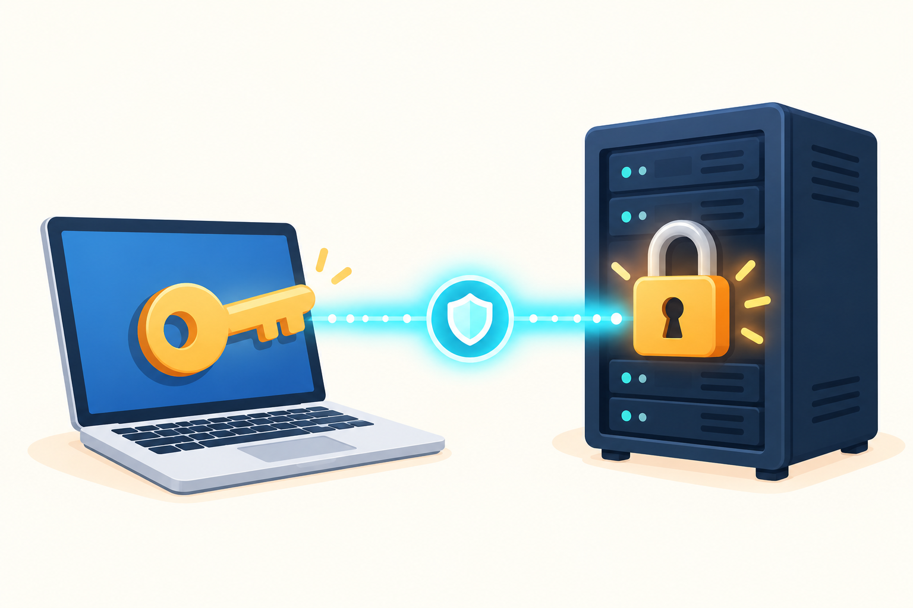

<!doctype html><html lang="ja"><meta charset="utf-8"><meta name="viewport" content="width=device-width,initial-scale=1"><title>SSH鍵認証：画像資料</title><link rel="stylesheet" href="../copyright.css">
<style>
*{box-sizing:border-box}body{margin:0;background:#f7f3ea;font-family:Poppins,'Noto Sans JP','Yu Gothic',sans-serif;color:#10233e}.slide{width:1600px;height:900px;padding:58px 78px;position:relative;overflow:hidden;background:linear-gradient(135deg,#fffdf8,#f4f8f9)}.eyebrow{color:#e56d22;font-weight:800;letter-spacing:2px;font-size:19px}.title{font-size:55px;line-height:1.22;margin:8px 0 20px;font-weight:800}.sub{font-size:23px;color:#486078;line-height:1.65}.footer{position:absolute;bottom:30px;left:78px;font-size:14px;color:#63788c;display:flex;align-items:center;gap:.6rem}.footer:after{content:"Copyright © 2026 Flashmelody Katsuyori M";padding-left:2.2rem;background:url("../assets/maishilogo_white_outlined.svg") left center/1.8rem 1.8rem no-repeat}.badge{display:inline-block;padding:7px 16px;border-radius:99px;background:#e7f7f7;color:#087e88;font-weight:800;font-size:17px}.cols{display:grid;grid-template-columns:1fr 1fr;gap:45px;align-items:center;height:720px}.card{border-radius:28px;background:white;padding:30px;box-shadow:0 15px 40px #18355217}.card h2{margin:0 0 15px;font-size:30px}.card p,.card li{font-size:21px;line-height:1.65}.warn{background:#fff3e9;border-left:7px solid #f38736;border-radius:14px;padding:16px 20px;font-weight:700;font-size:19px;color:#8a4316}.lockflow{display:flex;align-items:center;justify-content:center;gap:24px;margin-top:22px}.node{width:230px;text-align:center;padding:24px 12px;border-radius:24px;background:#edf9fa;border:2px solid #9edee0}.node .icon{font-size:88px;line-height:1}.node strong{display:block;font-size:25px;margin-top:10px}.node small{font-size:18px;color:#466277}.arrow{font-size:55px;color:#14aeb7}.steps{display:flex;gap:22px;margin-top:22px}.step{flex:1;background:#fff;border-radius:24px;padding:18px;box-shadow:0 9px 24px #15385b16;position:relative}.num{width:39px;height:39px;border-radius:50%;background:#f47c2b;color:#fff;font-weight:800;text-align:center;padding-top:7px}.step h3{font-size:23px;margin:11px 0}.step p{font-size:17px;line-height:1.5;margin:0}.terminal{background:#10233e;border-radius:22px;color:#e6fff8;padding:22px 26px;font-family:Consolas,'Courier New',monospace;font-size:22px;line-height:1.8;box-shadow:0 16px 30px #10233e30}.dim{color:#91a6bb}.green{color:#57e0b3}.red{color:#ffbf91}.screen{width:100%;border-radius:16px;box-shadow:0 11px 30px #10233e33;border:1px solid #d9e1e3}.caption{font-size:17px;color:#62788a;margin-top:10px}.ribbon{position:absolute;right:-40px;top:38px;background:#14adb7;color:white;padding:14px 62px;transform:rotate(8deg);font-weight:800;font-size:20px}.photo{width:100%;height:360px;object-fit:cover;object-position:center;border-radius:26px;box-shadow:0 15px 40px #18355225}.check{display:flex;gap:14px;align-items:start;margin:13px 0;font-size:20px}.check b{display:inline-block;background:#12aab4;color:white;width:30px;height:30px;border-radius:50%;text-align:center;flex:0 0 auto}.dont{display:flex;gap:14px;align-items:start;margin:13px 0;font-size:20px}.dont b{display:inline-block;background:#f07235;color:white;width:30px;height:30px;border-radius:50%;text-align:center;flex:0 0 auto}
</style><body><main id="app"></main><script>
const A='sakuraSSHキーの設定-assets/'; const page=Number(new URLSearchParams(location.search).get('p')||1);const foot='確認日：2026年9月29日　｜　出典：さくらのサポート「SSH公開鍵認証の設定をしたい」 https://help.sakura.ad.jp/rs/2804/';
const pages={
1:`<section class="slide"><div class="ribbon">パスワードを渡さない接続へ</div><div class="cols"><div><div class="eyebrow">BEGINNER'S GUIDE</div><h1 class="title">SSH鍵認証で<br>サーバーにつなぐ</h1><p class="sub">AIにアップロードまで頼むときも、<br><b>秘密をチャットに貼らず</b>に進めるための基本です。</p><div class="warn">⚠ この資料のコマンド例は学習用です。実際のパスワード・秘密鍵は誰にも送らないでください。</div></div><div><div class="caption">PCにある「秘密鍵」と、サーバーに置く「公開鍵」を組み合わせます。</div></div></div><div class="footer">${foot}</div></section>`,
2:`<section class="slide"><div class="eyebrow">01 / SSH接続とはなにか？</div><h1 class="title">「南京錠と鍵」で考える</h1><p class="sub">公開鍵と秘密鍵はセット。<b>公開鍵はサーバーへ、秘密鍵は自分のPCだけ</b>に保管します。</p><div class="lockflow"><div class="node"><div class="icon">🖥️🔑</div><strong>あなたのPC</strong><small>秘密鍵（開ける鍵）<br><code>C:\\Users\\あなた\\.ssh\\id_ecdsa.pem</code><br>外に出さない</small></div><div class="arrow">⟶</div><div class="node"><div class="icon">🗄️🔒</div><strong>サーバー</strong><small>公開鍵（錠前）<br>管理画面で登録<br><code>~/.ssh/authorized_keys</code> に相当</small></div></div><div class="steps"><div class="step"><div class="num">1</div><h3>サーバーに錠前を付ける</h3><p>公開鍵（<code>sshkey.pub</code>）の中身を登録します。公開してよいのは名前どおり「公開鍵」です。</p></div><div class="step"><div class="num">2</div><h3>PCは鍵で証明する</h3><p>管理画面で生成した秘密鍵（<code>id_ecdsa.pem</code>）はPCの <code>.ssh</code> フォルダーに移動して保管します。</p></div><div class="step"><div class="num">3</div><h3>合ったら入室できる</h3><p>鍵が対応していれば接続完了。なお、さくらではパスワード認証も無効にはなりません。</p></div></div><div class="footer">${foot}</div></section>`,
3:`<section class="slide"><div class="eyebrow">02 / どんな時に必要？</div><h1 class="title">AIにデプロイまで頼みたいとき</h1><div class="cols"><div class="card"><h2>困りごと</h2><div class="dont"><b>×</b><span>チャット欄にサーバーのパスワードを貼るのは不安</span></div><div class="dont"><b>×</b><span>毎回パスワードを入力するのが面倒</span></div><div class="dont"><b>×</b><span>作業後にパスワードが残らないか気になる</span></div></div><div class="card"><h2>鍵認証なら</h2><div class="check"><b>✓</b><span>秘密鍵を自分のPCに置いたまま接続できる</span></div><div class="check"><b>✓</b><span>AIには「鍵のある場所」を渡すだけでよい場合がある</span></div><div class="check"><b>✓</b><span>パスワード入力なしの接続にできる</span></div><div class="warn">秘密鍵ファイルの中身・パスフレーズも、チャットには貼り付けないでください。</div></div></div><div class="footer">${foot}</div></section>`,
4:`<section class="slide"><div class="eyebrow">03 / まずはパスワード認証でつなぐ</div><h1 class="title">コマンドプロンプトでの入力例</h1><div class="cols"><div><div class="terminal"><span class="dim">C:\\Users\\あなた&gt;</span> <span class="green">ssh</span> account@example.com<br><span class="red">account@example.com's password:</span> <span class="dim">（入力しても文字は表示されません）</span><br><br><span class="green">Last login: ...</span><br>account@server:~$</div><p class="sub">アカウント名とサーバー名は、契約先から案内された値に置き換えます。</p></div><div class="card"><h2>ここがポイント</h2><div class="check"><b>✓</b><span><code>ssh ユーザー名@サーバー名</code> を入力</span></div><div class="check"><b>✓</b><span>パスワードの入力中は何も表示されないのが正常</span></div><div class="dont"><b>!</b><span>このパスワードをAIや他人に送らない</span></div></div></div><div class="footer">${foot}</div></section>`,
5:`<section class="slide"><div class="eyebrow">04 / パスワード入力を省略する</div><h1 class="title">公開鍵を登録して、ゼロタッチ接続へ</h1><div class="cols"><div><div class="caption">さくらの管理画面の「新規追加」。公開鍵の登録、または鍵ペア生成を選べます。</div></div><div><div class="terminal"><span class="dim">C:\\Users\\あなた&gt;</span> <span class="green">ssh</span> -i C:\\Users\\あなた\\.ssh\\id_ecdsa.pem account@example.com<br><br><span class="green">account@server:~$</span> <span class="dim">← パスワード入力なしで接続</span></div><div class="steps"><div class="step"><div class="num">1</div><h3>鍵を作る</h3><p>管理画面が作った秘密鍵を、<code>C:\\Users\\あなた\\.ssh\\id_ecdsa.pem</code> に移動。</p></div><div class="step"><div class="num">2</div><h3>公開鍵を登録</h3><p><code>sshkey.pub</code> を管理画面で登録（サーバーの <code>~/.ssh/authorized_keys</code>）。</p></div><div class="step"><div class="num">3</div><h3>鍵を指定して接続</h3><p><code>-i</code> の後ろに秘密鍵の場所。秘密鍵の中身は決して共有しない。</p></div></div></div></div><div class="footer">${foot}</div></section>`,
6:`<section class="slide"><div class="eyebrow">05 / AIに安全に頼むためのプロンプト例</div><h1 class="title">鍵そのものを貼らずに依頼する</h1><div class="cols"><div><div class="terminal" style="font-size:18px;line-height:1.7">私のWindows PCにあるSSH鍵を使って、<br>さくらのレンタルサーバーへ接続し、<br>このフォルダーのサイトをアップロードしてください。<br><br>・秘密鍵、パスワード、パスフレーズの内容は<br>　表示・送信・記録しないでください。<br>・鍵は <span class="green">C:\\Users\\あなた\\.ssh\\id_ecdsa.pem</span> を使ってください。<br>・接続先は <span class="green">account@example.com</span> です。<br>・実行前に、接続先とアップロードするファイルの一覧を<br>　私に確認してください。<br>・削除や上書きが必要なら、先に理由と対象を示してください。</div><p class="caption">「あなた」「account@example.com」は実際の値に置き換えます。秘密鍵の<b>内容</b>は書かないでください。</p></div><div class="card"><h2>依頼文に入れると安心なこと</h2><div class="check"><b>✓</b><span>秘密情報を扱わないこと</span></div><div class="check"><b>✓</b><span>秘密鍵の「ファイルの場所」だけ</span></div><div class="check"><b>✓</b><span>接続先・作業対象を実行前に確認すること</span></div><div class="check"><b>✓</b><span>削除・上書きの前に必ず説明すること</span></div><div class="warn">AIがローカルの鍵ファイルを安全に使える環境であることを確認してから依頼しましょう。</div></div></div><div class="footer">${foot}</div></section>`};app.innerHTML=pages[page];</script></body></html>
